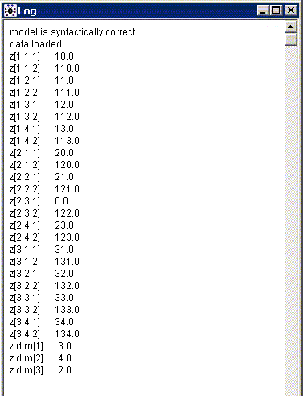

|
Version 1.5 (July 2010)
SAS macro %mds2wb
Exporting multi-dimensional structures
If you use SAS to prepare your WinBUGS data, you probably already know about %_lexport and %_sexport (see Rodney Sparapani's SAS Macros for BUGS webpage), used respectively to save lists (one-dimensional objects) and matrices (two-dimensional structures). This document presents the SAS macro %mds2wb, which saves multi-dimensional structures. Syntax:
%mds2wb(data, xvars, outfile, undef=na, savedim=1, objectname=, format=best12., linesize=100, dimnames=, nvars=, byrow=1);
It can also be used to save one-dimensional (lists) or two-dimensional structures, as do %_lexport and %_sexport. Note that all variables in xvars must be numeric. Menu
Top Saving a multi-dimensional variable
To learn how to use the macro %mds2wb, it is instructive to go through some examples. Examples
Consider the following data, where z is the variable to be saved, and yy, agegr and gender are index variables that will be used in a WinBUGS program.
The SAS System Obs yy agegr gender z 1 2003 < 25 y/o 0 10 2 2003 25-44 0 11 3 2003 45-64 0 12 4 2003 65+ 0 13 5 2004 < 25 y/o 0 20 6 2004 25-44 0 21 7 2004 65+ 0 23 8 2005 < 25 y/o 0 31 9 2005 25-44 0 32 10 2005 45-64 0 33 11 2005 65+ 0 34 12 2003 < 25 y/o 1 110 13 2003 25-44 1 111 14 2003 45-64 1 112 15 2003 65+ 1 113 16 2004 < 25 y/o 1 120 17 2004 25-44 1 121 18 2004 45-64 1 122 19 2004 65+ 1 123 20 2005 < 25 y/o 1 131 21 2005 25-44 1 132 22 2005 45-64 1 133 23 2005 65+ 1 134 In other words, the data set above describes z(yy,agegr,gender) for 23 pairs of (yy,agegr,gender) values; note that z is undefined for yy=2004, agegr=45-64, gender=0. The following call to %mds2wb
%mds2wb(mydata, z, 'c:\tmp\z.txt')
writes the following to text file c:\tmp\z.txt: # z # index variables: yy agegr gender # # yy # 1: 2003 # 2: 2004 # 3: 2005 # agegr # 1: < 25 y/o # 2: 25-44 # 3: 45-64 # 4: 65+ # gender # 1: 0 # 2: 1 list(z.dim = c(3, 4, 2), z = structure(.Data = c(10, 110, 11, 111, 12, 112, 13, 113, 20, 120, 21, 121, NA, 122, 23, 123, 31, 131, 32, 132, 33, 133, 34, 134), .Dim = c(3, 4, 2))) Note that:
%mds2wb(mydata, z, 'c:\tmp\z.txt', undef=0)
# z # index variables: yy agegr gender # # yy # 1: 2003 # 2: 2004 # 3: 2005 # agegr # 1: < 25 y/o # 2: 25-44 # 3: 45-64 # 4: 65+ # gender # 1: 0 # 2: 1 list(z.dim = c(3, 4, 2), z = structure(.Data = c(10, 110, 11, 111, 12, 112, 13, 113, 20, 120, 21, 121, 0, 122, 23, 123, 31, 131, 32, 132, 33, 133, 34, 134), .Dim = c(3, 4, 2))) The figure below shows how the above data would be read in a WinBUGS program.  Finally, z-dimensions can be given variables names, which we may be more natural and more convenient for the WinBUGS programmer, as in:
%mds2wb(mydata, z, 'c:\tmp\z.txt', undef=0, dimnames=Y A G)
which will change z.dim = c(3, 4, 2) for Y = 3, A = 4, G = 2 in the output file: # z # index variables: yy agegr gender # # yy # 1: 2003 # 2: 2004 # 3: 2005 # agegr # 1: < 25 y/o # 2: 25-44 # 3: 45-64 # 4: 65+ # gender # 1: 0 # 2: 1 list(Y = 3, A = 4, G = 2, z = structure(.Data = c(10, 110, 11, 111, 12, 112, 13, 113, 20, 120, 21, 121, 0, 122, 23, 123, 31, 131, 32, 132, 33, 133, 34, 134), .Dim = c(3, 4, 2))) For data such as above, one knows in advance that the data will contain two values for gender, that is, that G will take the value 2. Consequently, one could prefer to write a WinBUGS program that reflects that. For example, if the program involves a loop on gender as below,
for (gender in 1:G)
{ # some WinBUGS code } one might prefer to use the following code, where G is replace by its known value:
for (gender in 1:2)
{ # some WinBUGS code } In this case, the value for G need not be saved in the %mds2wb output data set, as variable G will not be used in the WinBUGS program; G can be omitted by replacing the corresponding dimension name by a tilde (~):
%mds2wb(mydata, z, 'c:\tmp\z.txt', undef=0, dimnames=Y A ~)
# z # index variables: yy agegr gender # # yy # 1: 2003 # 2: 2004 # 3: 2005 # agegr # 1: < 25 y/o # 2: 25-44 # 3: 45-64 # 4: 65+ # gender # 1: 0 # 2: 1 list(Y = 3, A = 4, z = structure(.Data = c(10, 110, 11, 111, 12, 112, 13, 113, 20, 120, 21, 121, 0, 122, 23, 123, 31, 131, 32, 132, 33, 133, 34, 134), .Dim = c(3, 4, 2))) Order of index variables
In the example above, the yy variable is used as the first-dimension index variable, agegr is used second, and then gender. Index variables are used in the same order as they appear in the dataset (that is, in the same order of VARNUM in proc content's output when applied to it). If you plan to use the series of index variables in a given order in your WinBUGS program, make sure they appear in the appropriate order in your data set. To do so, one could, e.g., use proc sql to select the variables in the desired order, as in
proc sql;
create table ReorganizedData as select xvar, indexvar1, indexvar2, indexvar3 from OriginalData; quit; Calling %mds2wb with the reorganized data set
%mds2wb(ReorganizedData, xvar,
'c:\users\pbelisle\My Documents\Home\myproject\WinBUGS\data\xvar.txt');
will then save the data with the index variables being used in the same order as they were selected through the proc-sql procedure call. Top Saving multiple objects by calling %msd2wb only once
The next three examples illustrate how to save multiple equally-indexed variables by a single call to %mds2wb; the first example saves each variable under its original name while the next two show how to save them under a unique variable name — each variable saved being included as one dimension of the new object saved — through the option objectname=. Example 2 saves the data in an order that seems most natural – one observation at a time, through the default option byrow=1 – while example 3 saves the data in yet a possibly useful order – one variable at a time, through the option byrow=0. Saving distinct variables separately
Suppose you have a data set (below) consisting of 8 variables, m1--m8, to be saved along with two index variables, ethnicity (taking values 1, 2 and 3) and gender (0/1). The SAS System Obs ethnicity gender m1 m2 m3 m4 m5 m6 m7 m8 1 1 0 10 20 30 40 50 60 70 80 2 1 1 11 21 31 41 51 61 71 81 3 2 0 12 22 32 42 52 62 72 82 4 2 1 13 23 33 43 53 63 73 83 5 3 0 14 24 34 44 54 64 74 84 6 3 1 15 25 35 45 55 65 75 85You can save the 8 variables m1-m8 by a single call to %mds2wb by specifying the eight variables in the argument xvars, as follows:
%mds2wb(example2, m1 m2 m3 m4 m5 m6 m7 m8, 'c:\tmp\m.txt')
which would save the following file # m1 m2 m3 m4 m5 m6 m7 m8 # index variables: ethnicity gender # # ethnicity # 1-3: 1-3 # gender # 1: 0 # 2: 1 list(m1.dim = c(3, 2), m1 = structure(.Data = c(10, 11, 12, 13, 14, 15), .Dim = c(3, 2)), m2 = structure(.Data = c(20, 21, 22, 23, 24, 25), .Dim = c(3, 2)), m3 = structure(.Data = c(30, 31, 32, 33, 34, 35), .Dim = c(3, 2)), m4 = structure(.Data = c(40, 41, 42, 43, 44, 45), .Dim = c(3, 2)), m5 = structure(.Data = c(50, 51, 52, 53, 54, 55), .Dim = c(3, 2)), m6 = structure(.Data = c(60, 61, 62, 63, 64, 65), .Dim = c(3, 2)), m7 = structure(.Data = c(70, 71, 72, 73, 74, 75), .Dim = c(3, 2)), m8 = structure(.Data = c(80, 81, 82, 83, 84, 85), .Dim = c(3, 2)))Note that the dimensions of the first object only were saved (m1.dim), as all variables have the same dimensions. As was the case when only one variable was saved, dimensions can be saved under constants through the dimnames= option, or simply not be saved through the option savedim=0. Saving distinct variables as a single structure
While it may be interesting to save a series of variables separately, as shown above, the variables to be saved may consist in dimensions of an higher-level object; in this example, e.g., if the variables m1--m8 are the 8 subscales (or dimensions) of variable m, we can save the values of variables m1--m8 into a single object, which name is given through the objectname= option, as in
%mds2wb(example2, m1 m2 m3 m4 m5 m6 m7 m8, 'c:\tmp\m.txt', objectname=m)
which would save the data below. # m # index variables: ethnicity gender original_variable # # ethnicity # 1-3: 1-3 # gender # 1: 0 # 2: 1 # original_ # variable # 1: m1 # 2: m2 # 3: m3 # 4: m4 # 5: m5 # 6: m6 # 7: m7 # 8: m8 list(m.dim = c(3, 2, 8), m = structure(.Data = c(10, 20, 30, 40, 50, 60, 70, 80, 11, 21, 31, 41, 51 , 61, 71, 81, 12, 22, 32, 42, 52, 62, 72, 82, 13, 23, 33, 43, 53, 63, 73, 83, 14, 24, 34, 44, 54, 64 , 74, 84, 15, 25, 35, 45, 55, 65, 75, 85), .Dim = c(3, 2, 8)))Note that the original variables names saved are listed under the pseudo-index name original_variable. objectname= options has no effect when xvars consists of only one variable (that is, when only one variable is saved through %mds2wb, you cannot change the variable name under which it is going to be saved in a WinBUGS list [other than by renaming it through a data set or a call to proc datasets prior to calling %mds2wb]). The number of variables saved can be written to a constant, which name will be given through the nvars= option, as in
%mds2wb(example2, m1 m2 m3 m4 m5 m6 m7 m8, 'c:\tmp\m.txt', objectname=m, nvars=K)
which would save the data as shown below. # m # index variables: ethnicity gender original_variable # # ethnicity # 1-3: 1-3 # gender # 1: 0 # 2: 1 # original_ # variable # 1: m1 # 2: m2 # 3: m3 # 4: m4 # 5: m5 # 6: m6 # 7: m7 # 8: m8 list(K = 8, m.dim = c(3, 2, 8), m = structure(.Data = c(10, 20, 30, 40, 50, 60, 70, 80, 11, 21, 31, 41, 51, 61, 71, 81, 12, 22, 32, 42, 52, 62, 72, 82, 13, 23, 33, 43, 53, 63, 73, 83, 14, 24, 34, 44, 54, 64, 74, 84, 15, 25, 35, 45, 55, 65, 75, 85), .Dim = c(3, 2, 8))) Note that the values of variables of m1--m8 are entered into the object m one line (or observation) at a time, according to the default value given to the option byrow=1. (The option name, byrow, was chosen by analogy to the byrow argument in R matrix function; however, it takes values 1 (one, the default value) or 0 (zero), while in R it takes a logical value – True or False.) Although saving data in this order seems natural — as one could, e.g., model the vectors (m1[i], m2[i], ..., m8[i])' as multinomial, as in the WinBUGS code below:
p[1:8] ~ ddirch(a[1:8]) for (e in 1:3) { for (g in 1:2) { n[e,g] <- sum(m[e,g,1:8]) m[e,g,1:8] ~ dmulti(p[ ], n[e,g]) } } — one may also want to save all values in m1 first, followed by the values in m2, and so on, to finish with values in m8. This option will be discussed in next section. Saving distinct variables as a single structure, one variable at a time
The values of a series of variables can appended to each other through the option byrow=0. Doing so in the example presented in previous section, values in m1 would be entered first, followed by values in m2, etc. Thus, the call
%mds2wb(example2, m1 m2 m3 m4 m5 m6 m7 m8, 'c:\tmp\m.txt', objectname=m, byrow=0)
would save the data as shown below, where the values in m are, in order, the values in m1 (the 10's), followed by the values in m2 (the 20's), etc. # m # index variables: original_variable ethnicity gender # # original_ # variable # 1: m1 # 2: m2 # 3: m3 # 4: m4 # 5: m5 # 6: m6 # 7: m7 # 8: m8 # ethnicity # 1-3: 1-3 # gender # 1: 0 # 2: 1 list(m.dim = c(8, 3, 2), m = structure(.Data = c(10, 11, 12, 13, 14, 15, 20, 21, 22, 23, 24, 25, 30, 31, 32, 33, 34, 35, 40, 41, 42, 43, 44, 45, 50, 51, 52, 53, 54, 55, 60, 61, 62, 63, 64, 65, 70, 71, 72, 73, 74, 75, 80, 81, 82, 83, 84, 85), .Dim = c(8, 3, 2)))This data construct, however, would make the modeling presented in previous section – where the 1:8 must come first in the series of m indices in this construct –
p[1:8] ~ ddirch(a[1:8])
for (e in 1:3) { for (g in 1:2) { n[e,g] <- sum(m[1:8,e,g]) m[1:8,e,g] ~ dmulti(p[ ], n[e,g]) } } impossible to use, as WinBUGS would issue the following error message:
vector valued relation m must involve consecutive elements of variable
We thought, however, that this option — saving a series of variables by column rather than by row — might still show useful for some applications. Top Download
Download %mds2wb.sas 1.5 now. |